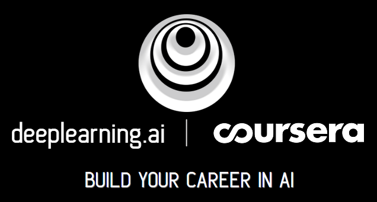
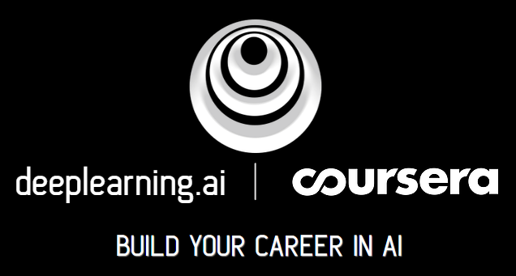
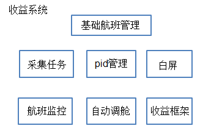
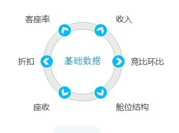
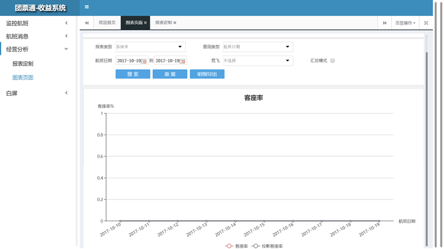

-
- Basic info. 基本信息
- 个人信息: 张子阔 / 男
- 毕业院校: 北京师范大学
- 院校性质: 985、211
- 主修专业: 计算机科学与技术
- 业余爱好: 科幻电影,推理电影,Geek盛会,球类运动
- GitHub个人仓库: https://github.com/zhangzikuo
-
- Skill. 技能清单
-
总览


.svg?q=306)


 

-
- 1、 Java基础扎实，深刻理解MVC思想
- 2、 深谙常用的数据结构,如：Collection、Map等，了解其适用场景，略读过部分常用数据结构JDK源码
- 3、 熟悉多线程并发下常用数据结构，对线程池框架略有研究，略读过并发包下常用的几种数据结构的JDK源码
- 4、 了解锁机制及其相关数据结构(synchronized、Lock、volatile、ThreadLocal)，熟悉其适用场景
- 5、 熟悉JVM相关知识：JVM类加载、JVM内存模型、Java GC机制等，并能通过工具查看JVM信息并根据信息进行代码的调优、JVM调优、及时排查与解决OOM和SOF问题
- 6、 熟悉Java的IO/NIO/AIO，能在开发过程中正确使用该数据结构进行文件读写操作
- 7、 熟悉Java的反射机制，在开发过程中能熟练使用反射机制对大对象的属性设置值
- 8、 熟悉RPC和Webservice技术，能根据不同场景采用这两种技术开发客户端、服务端通信的应用程序
- 9、 深刻理解设计模式的开闭原则(总纲)、单一职责原则等，了解并能在开发过程中使用常用的设计模式进行开发
- 10、熟悉Nutz框架开发(被认为是SSH框架的最佳替代)
- 11、在设计模式原则和读过的一些JDK源码指导下，对代码有洁癖，不能忍受不遵循设计原则和MVC三层设计的代码
- 12、熟悉常用的linux的命令，曾编写过产品安装时，elasticsearch的JVM内存分配的shell脚本
- 13、熟悉常用的windows CMD命令，曾编写过产品安装时，elasticsearch的JVM内存分配的bat脚本
- 14、了解iss(innosetup)脚本，曾编写过iss脚本与shell脚本的接口
- 15、时刻保持对前沿技术的热证，自学能力强，通过利用假日等空余时间，自学完成斯坦福大学吴恩达(Andrew Ng)教授讲授的机器学习课程，并取得相关资格认证
-
- Experience. 项目与工作经验
 去哪儿网（2017.9 - 2018.7）
去哪儿网（2017.9 - 2018.7）-
机票-团票通各相关业务系统
介绍：团票通营销活动渠道购买的机票及保险，涉及search、booking、生单、支付、退款各流程涉及的三十多个业务子系统功能。
负责：1、完成保险信息的生单与订单详情查询部分；采用模板模式封装各个险种的生单流程，使得险种易于扩展， 使用工厂方法模式封装各个险种的生单Bean，业务层只需要持有工厂Bean的引用，根据险种类型获取具体的险种生单Bean；机票单生单 不保险单生单采用同步方式，机票单生单成功后再生保险单，保险单生单失败机票单按丌搭售保险逻辑正常走支付流程。 2、根据系统的监控，对原有search逻辑的维护、线上bug以及故障修复。
-
机票-收益相关业务系统
介绍：机票收益相关业务系统，根据内置的一些指令实时获取包机相关客座率等相关信息，进行自动的调舱，如：升舱、 降舱、补仓等，从而实现包机业务的最大收益。同时开发相关图表功能，直观查看收益相关信息，如客座率、日上客差值、竞比环比、收入等。
  
Java Web相关【开始】 启明星辰（2015.9 -2017.9）
启明星辰（2015.9 -2017.9）-
产品研发-日志采集系统
介绍：针对不同的应用通过授权，能够采用不同的采集方式， 同时，对已部署的系统，应该能够不断的添加新开发出来的采集方式， 因此插件模式也就应运而生。 在采集器(模块)中，每一种采集方式都被定义为一个插件， 这个插件在自己的代码控件中实现本身特有的采集功能， 并自己控制插件配置的保存和读取。
负责：各采集插件服务的研发工作，目前实现的主要的采集插件有:apache、iis、 jdbc(区分不同数据库类型，主要有oracle;sqlserver;mysql;db2等)、mysql、 oracle、mysql、textfile、textfilepath等。
技术栈：quartz框架，实时多线程任务调度；nutz框架

-
产品研发-日志审计系统
介绍：系统总13个一级模块，若干二三级模块。系统能实时采集企业和组织中各种不同厂商的安全设备、 网络设备、主机、操作系统、以及各种应用系统产生的日志、事件、报警等信息，并将数据信息汇集到审计中心，进行集中存储、 展现、查询和审计。产品解决安全行业中：各种安全产品及设备的日志数据通常杂乱无序，同时也无法体现它们之间的相互关系。 因此日志审计系统就是为解决这些问题建立起一个信息交换、信息存储、信息处理的平台，通过该平台，可以对各类产品的日志、 事件进行统一管理、分析。
负责：目前主要是规则、审计、告警三个一级模块的研发和维护等工作。其中，规则指的是审计的前提，告警 是审计的结果。此三个模块是日志审计的核心所在。规则作为最基础的部件，规则配置的条件面板采用了插件式的设计。实时采集的 syslog日志通过某种机制从采集器转发过来后，通过日志范式化后形成可读性较高的结构化数据，即：事件，针对匹配规则的某些事 件便会产生告警通知客户，是否进行处理。
技术栈：
- 前端栈：Jquery；统计分析图表展示框架：echarts。
- 后端栈：elasticsearch用于快速检索，kibana用于分析展示，nutz框架等。
软技能：
- 原型设计：Axure RP Pro 7.0
- 设计文档：Word2010;Visio2010;Project2010
- 分析工具：思维导图Mindjet
- 进度规划：甘特图

-
产品研发-分布式关联分析系统
介绍：关联分析中心建设思路旨在南方电网项目中独立出关联分析中心，从而减轻系 对CPU的消耗，提升产品运行速度。关联分析中心是未来承载TSOC安全管理平台的事件规则告警的分析中心， 实现事件分析独立分布式的处理建设目标。
负责：完成的主要功能有TMS消息服务(即：RPC服务)。TMS目前 支持两种传输方式：MessageClient和RemoteClient，可以按照实际需要选择合适的传输类型。MessageClient： 支持点对点单向传输，由客户端发送到服务器，传输数据支持缓存，能够实现断点续传。 RemoteClient： 支持多点双向传输，由客户端发送到服务器，服务器可以返回数据，也可以不返回，直接作为单向传输，但 是都不支持缓存，无法实现断点续传。
技术栈：
- （0）TMS:即传统意义上的RPC，TMS目前是公司自己基于github上开源的Kryonet封装的 一套类似于RPC框架(类似于：dubbo、netty等RPC框架);
- （1）Kryonet：它是一个Java库，它为高效的TCP和UDP客户端/服务器网络通信提供了一个干净简单的API，使用NIO; KryoNet使用Kryo串行化库自动和有效地将对象图传输到整个网络;Kryonet围绕着RPC的核心来实现，主要包含：服务端启动服务、 连接客户端、注册类、协议TCP/UDP、缓冲大小、线程、LAN 服务发现、可插拔的序列化、RMI
- （2）消息服务中间件：Kafka、RocketMQ、Redis等【尚在选型】;数据转发器

-
产品研发-SOC安全管理系统
介绍：全面管理，综合分析平台。SOC安全管理系统以 IT 资产为基础，以业务信息系统为核心， 以用户体验为指引，从监控、审计、风险、运维四个维度建立一套可度量的统一业务支撑平台，使得各种用户能够对业 务信息系统进行可用性、性能与服务水平监控，事件分析、审计、预警与响应、风险及态势的度量与评估，标准化、例 行化、常态化的安全流程管控，从而最终实现业务信息系统的持续安全运营。
负责：威胁情报功能开发，以及采用elasticsearch默认支持的脚本groovy进行威胁情报的配置，匹配查询等。
技术栈：基本同上-->产品研发-日志审计系统；新增groovy实现威胁情报脚本匹配查询。
软技能：完全同上-->产品研发-日志审计系统

 航天宏图（2013.6 - 2014.9）
航天宏图（2013.6 - 2014.9）-
定制项目-航遥中心数据分发系统
介绍：
- （0）数据查询检索：实现用户对遥感影像产品、专题产品及其它相关数据检索
- （1）服务门户模块：在此系统提供了新闻发布功能、产品介绍功能、工具下载功能、信息共享功能
- （2）订单管理：用来实现用户对已有订单、再加工订单、数据需求单、常规需求单的管理，包括订单查询、订单状态跟踪与统计分析、订单内容修改删除、订单取消等功能
- （3）数据同步：同步基础数据支撑平台数据到信息共享与服务系统数据库；实现将内网经过筛选后的元数据和快视图数据同步到外网系统的功能；产品订单进行内网导出，可以为外网订单进行导入做好数据支撑
负责： 订单管理模块的开发与维护
技术栈： 前端栈：
- DWR框架
- 统计分析图表展示框架：highcharts
- 基本环境：jdk1.6+tomcat6.0+oracle11g+Arcgis
- SSH框架
软技能：
- 需求文档编写
- 概要设计文档
- 功能界面原型设计：Axure RP Pro 7.0
-
定制项目-军工数据分发系统和应用调度系统
介绍： 项目包含5个子系统：
- （0）资料存档管理子系统
- （1）查询检索子系统
- （2）产品分发子系统
- （3）产品定制服务子系统
- （4）应用调度子系统
负责：
- （0）产品分发子系统
- （1）应用调度子系统
技术栈：同上-->定制项目-航遥中心数据分发系统
Java Web相关【结束】写在最后
-
个人简历
- GitHub访问地址:中文简历
介绍： 这是个人的中文在线简历，为了实时更新个人的经历，一劳永逸，特别将此简历做成在线的。后期会在github上新开一个分支，做中英文简历。欢迎star。
其他项目【结束】

张子阔的简历
zhangzikuo
-
- Contact. 联系方式
- 电话: 131-6199-6675;
- 邮箱: zhangzikuo@126.com
- 微信: 13161996675
- QQ: 2388338038
-
- Application. 应聘岗位
- java高级讲师，大数据讲师
我是一个热爱技术，乐于分享，乐于交流技术的“技术控”。分享让快乐，交流让我睿智！
我目前正在寻找一份可以让我可以随时分享我所钟爱的技术的java相关工作。希望缘分让我们友谊的小船走向远方。